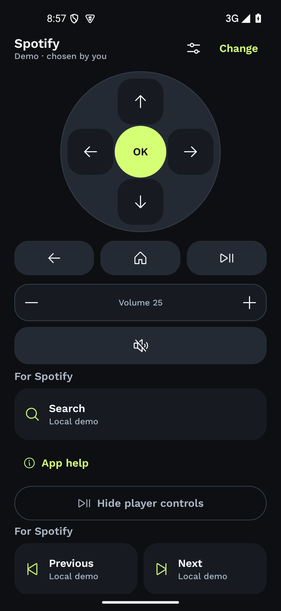

01 / YOUTUBE SHARE
Found it on your phone?
Open it on your TV.
Share a YouTube link with The Remote and choose its TV destination on your phone.

 The Remote
The Remote
A FREE PHONE REMOTE FOR ANDROID TV
Search YouTube from your phone, switch TVs by room, and keep app controls handy.
The Remote already has testers. The official Google Play beta sign-up link will be added when it is ready.
YOUTUBE SEARCH ON YOUR PHONE
Use your phone keyboard to enter a YouTube search, then send it to your TV.

01 / YOUTUBE SHARE
Share a YouTube link with The Remote and choose its TV destination on your phone.
02 / CONTROLS FOR YOUR APP
Choose YouTube or Spotify yourself, then reach familiar remote controls and the app actions available for your selection.


03 / YOUR TV LIST
Give each TV a name and room you recognize. Edit its details from your phone to keep your saved-TV list easy to scan.


COMPATIBLE ANDROID TV
The Remote pairs over your home network with compatible Android TV and Google TV devices. The app does not require an account or route remote commands through a developer-operated cloud relay.
Available controls vary by TV model. Android TV Remote Service v2 is required; YouTube search and playback behavior depends on the TV and its YouTube version.
Read the privacy policyCOMPATIBILITY, SEARCH & PRIVACY
The Remote is for compatible Android TV and Google TV devices. Available controls vary by model. Android TV Remote Service v2 is required.
No. For YouTube search, the phone sends the search to the selected TV over your home network. Whether the TV accepts it depends on the model and its YouTube version. Other app searches may be available through the optional TV companion on compatible TVs.
The search goes to the TV you selected over your local network. YouTube may process a YouTube search link under its privacy policy. The Remote does not keep a search history.
The Remote already has testers. The official Google Play beta sign-up link will be added here when it is ready. No signup details are collected on this page.
THE REMOTE / GOOGLE PLAY BETA
The Remote already has testers. The official Google Play beta sign-up link will be added here when it is ready.